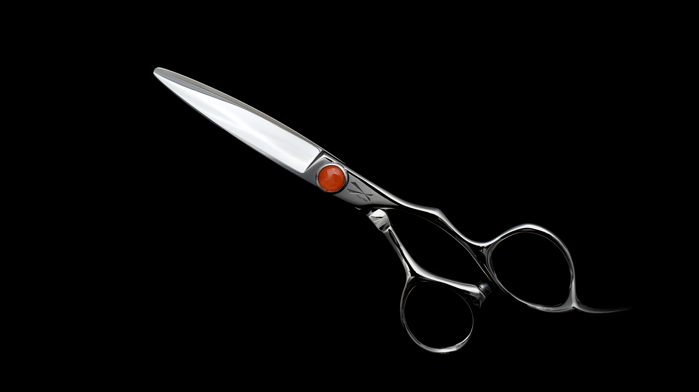
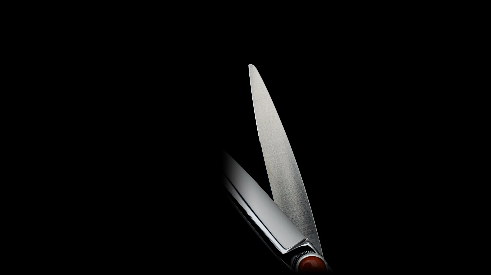
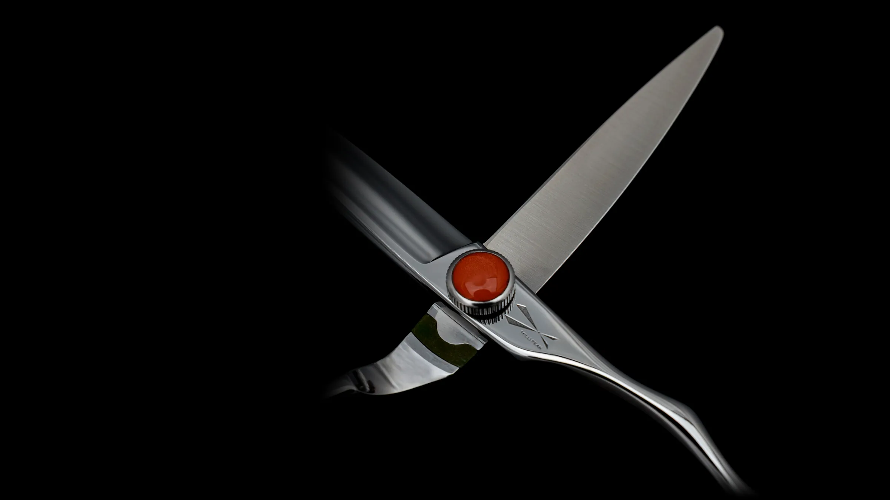
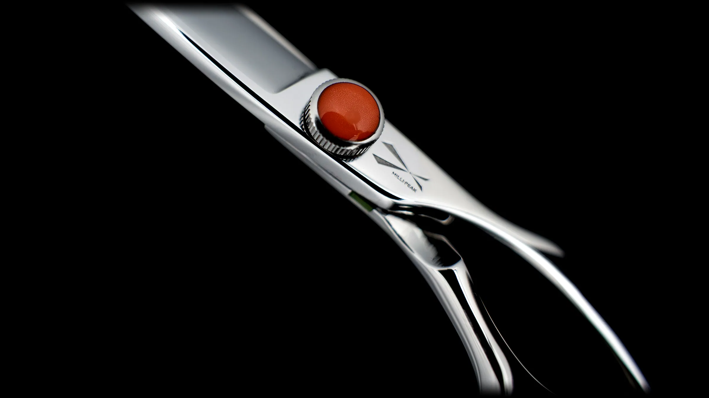
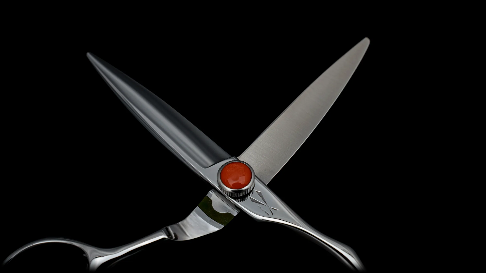
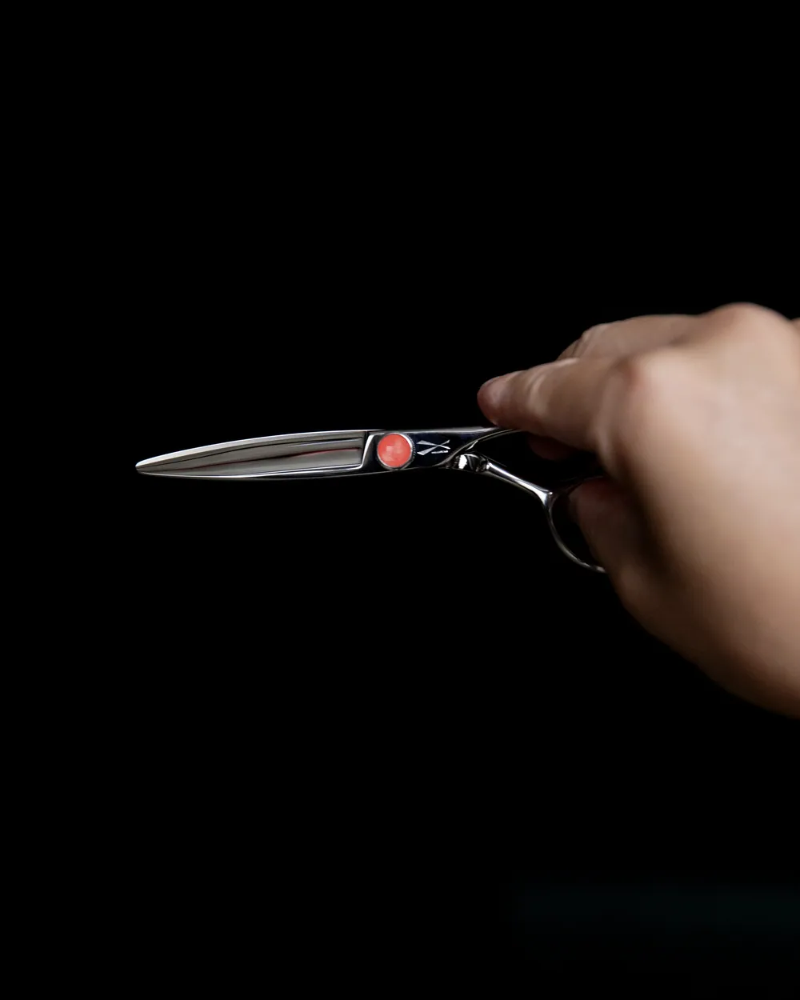
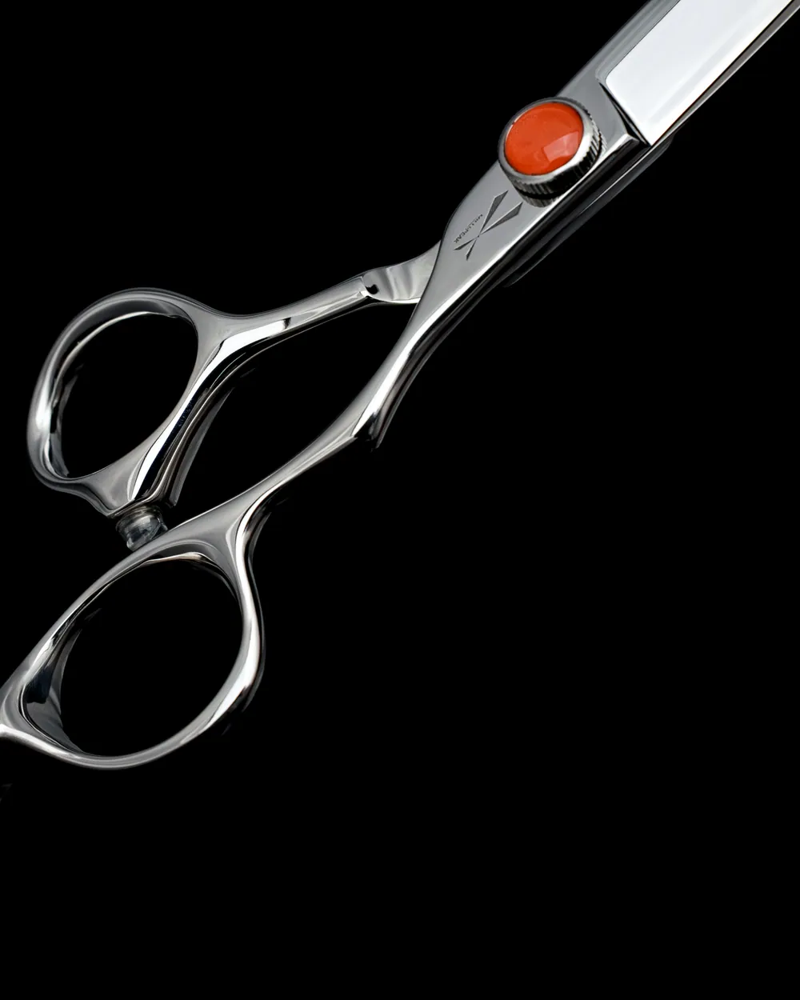
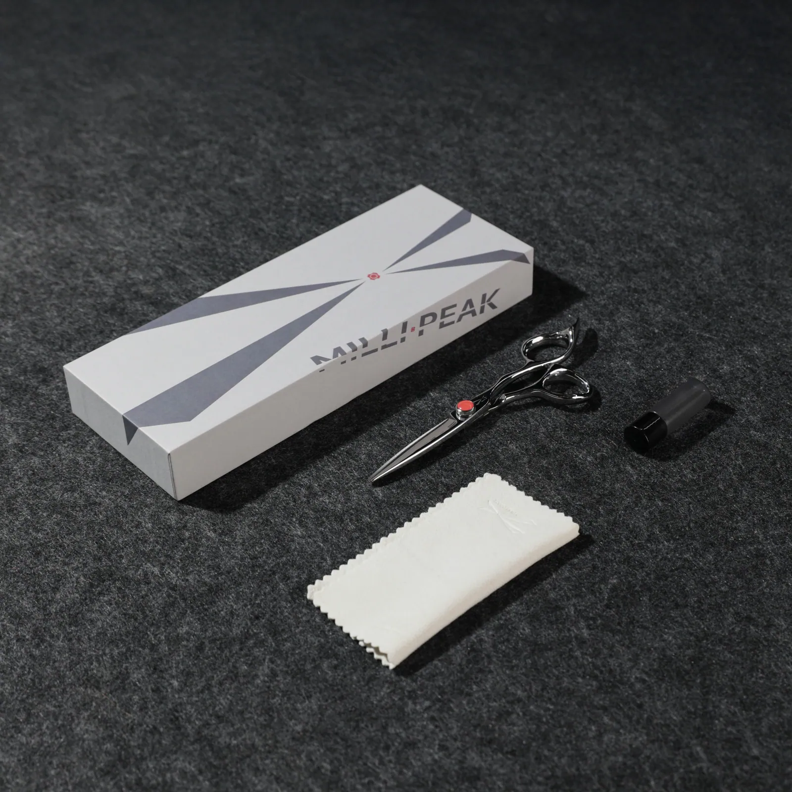

MP-102S 毫剪 單刃偏軸滑剪
定位 positioning｜創造髮束，降低毛躁
滑剪也能創造髮束、降低毛躁。
Even slide cutting creates defined sections with less frizz.
毛躁度約減少 50%。長髮短髮都適用，5.5 吋，更好上手。
About 50% less frizz. For long and short hair alike. 5.5", easy to pick up.

01
單刃 single edge
只有一面是切割點。
Only one side is a cutting point.

02
5.5 吋 5.5 inch
更好上手。
Easier to pick up.

03
耐磨片＋軸承（培林） wear plate + bearing
滑動更順、更穩。
A smoother, steadier glide.



MP–102S specifications
- 型號 model
- MP–102S
- 用途 use
- 單刃偏軸滑剪single-edge offset slide shear
- 尺寸 size
- 5.5 吋
- 重量 weight
- 63g
- 整體長度（含尾柄） overall length, with finger rest
- 16.3cm
- 整體長度（不含尾柄） overall length, without finger rest
- 14.6cm
- 尾柄長度 finger rest
- 1.7cm
- 刀身長度 blade length
- 6.1cm
- 顏色 colour
- 銀色silver
- 刃型 blade type
- 單刃，只有一面是切割點single edge, only one side cuts
- 配件 parts
- 耐磨片＋軸承（培林）wear plate + bearing
- 售價 price
- NT$5,000（單支）per pair
＊鋼材：日本 440C Steel: Japanese 440C.
順 flow.
MP–102S
創造髮束，降低毛躁
- 單支 singleNT$5,000
- 任選 3 把 四款任選三把 any threeNT$13,500
- 4 把組 緻・通・透・順 set of fourNT$17,500
價格為新台幣，含稅。
課程 course：《科學剪髮・基礎剪髮教學》 NT$6,000

配件 accessories
盒裝內容：剪刀、包裝盒與隨附配件。
In the box: the shears, the case and included accessories.